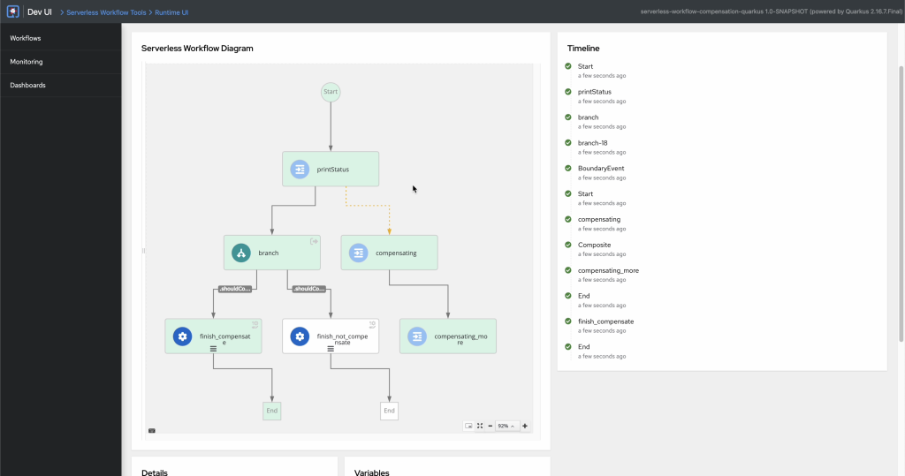
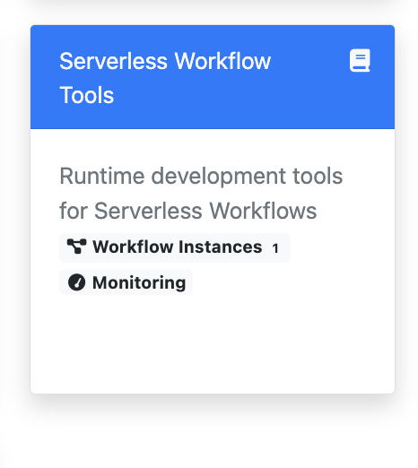
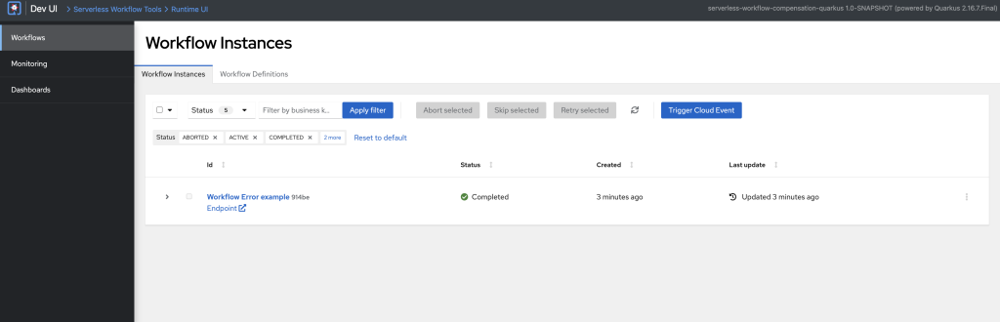
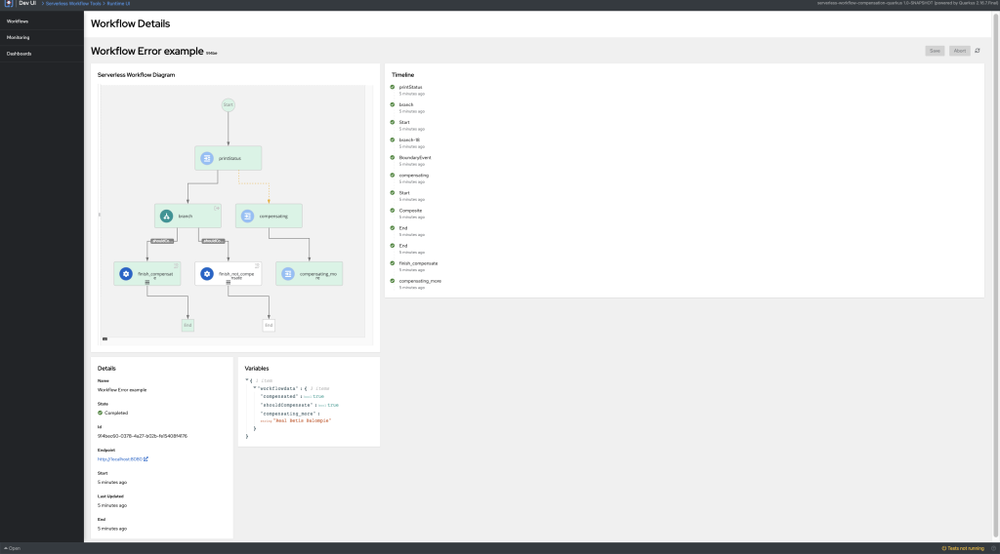

New update! SWF dev UI diagram
We are pleased to announce that the serverless workflow dev UI now supports colored nodes based on the path the workflow has taken for execution.

How to view the diagram?
To view the diagram, the easiest method is to use the awesome set of examples that we have here. In my video below, I will be using the serverless-workflow-compensation-quarkus example.
Prerequisites:
- Java 11+ installed
- Maven 3.8.6+ installed
- Docker installed
To start the example run the command: mvn clean package quarkus:dev
This will start all the necessary services to start the example.
Once all the services are started, you can visit the dev UI.
To start a workflow instance, you can use the following command in the terminal:
curl -X POST -H 'Content-Type:application/json' -H 'Accept:application/json' -d '{"shouldCompensate": true}' http://localhost:8080/compensation
Click on the workflow instances under the Serverless Workflow Tools card.

This will navigate you to the workflow instances page, where you can see the list of workflow instances available.

Click on the Workflow Error example to get navigated to the workflow details page. You can see the diagram with colored nodes being rendered in the Serverless Workflow Diagram card.

A detailed explanation is available in the video attached below.
As you can see in the video, the compensation example has different paths being executed depending on the shouldCompensate boolean value. When there is an error in the workflow execution, that node is shown in Red color.
Conclusion
This diagram helps the user understand and visualize the path taken by the workflow execution, thereby improving the user experience in the dev UI.
Stay tuned for more exciting updates in the dev UI!!!